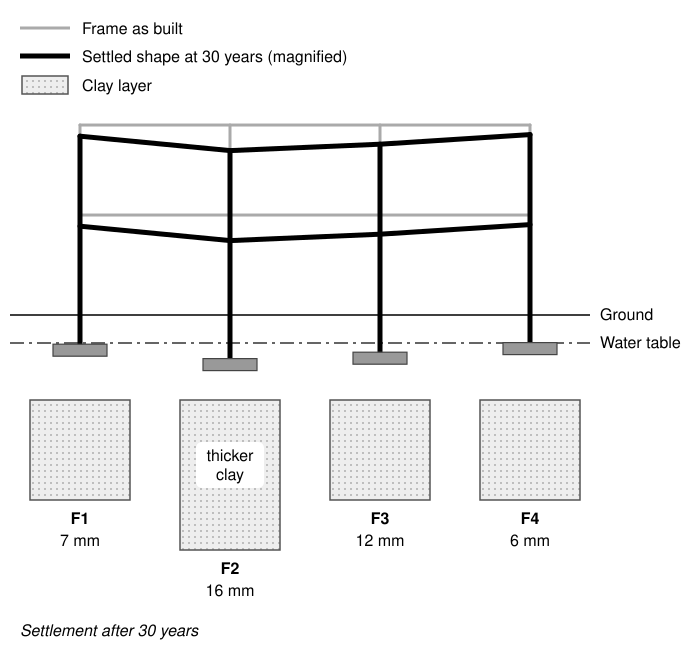
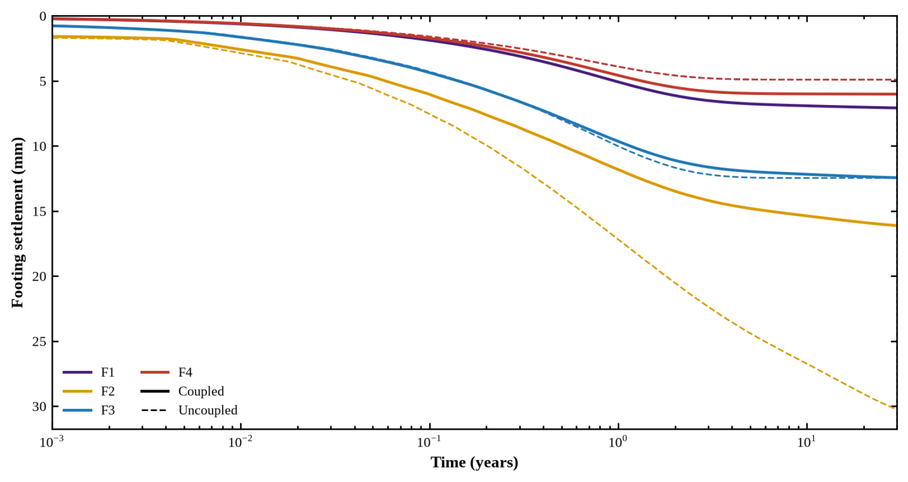
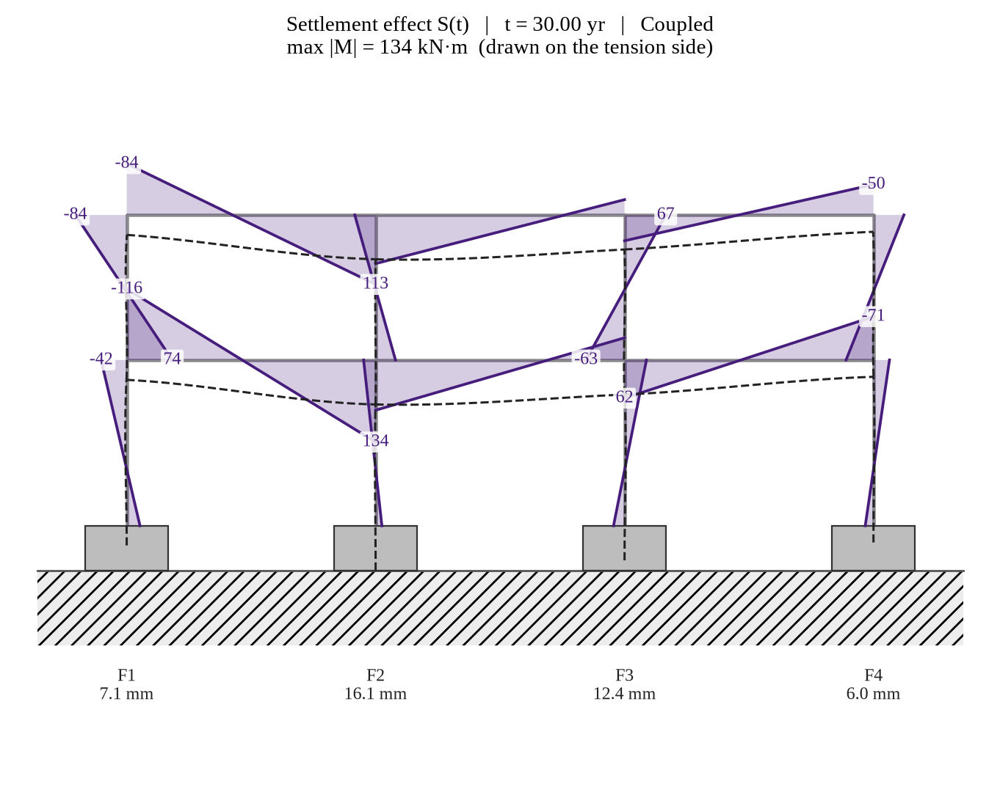
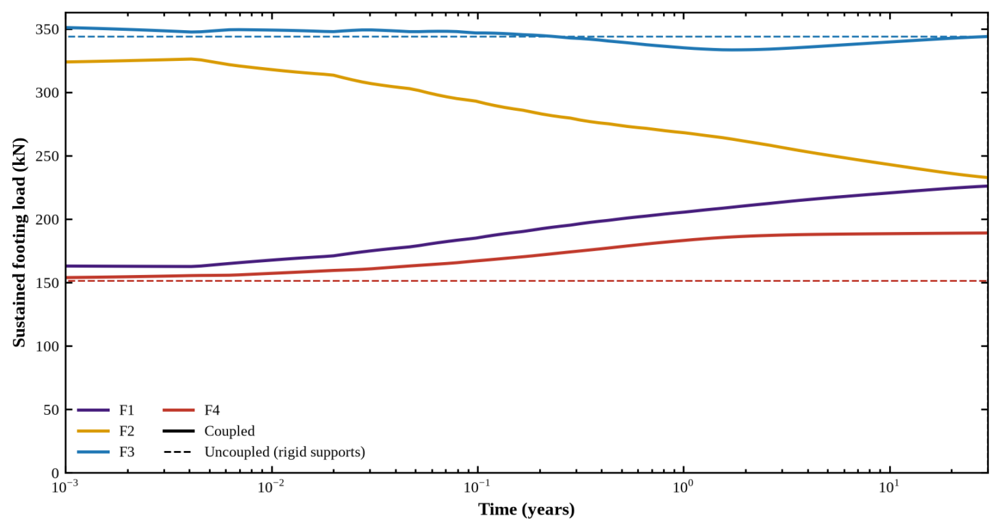
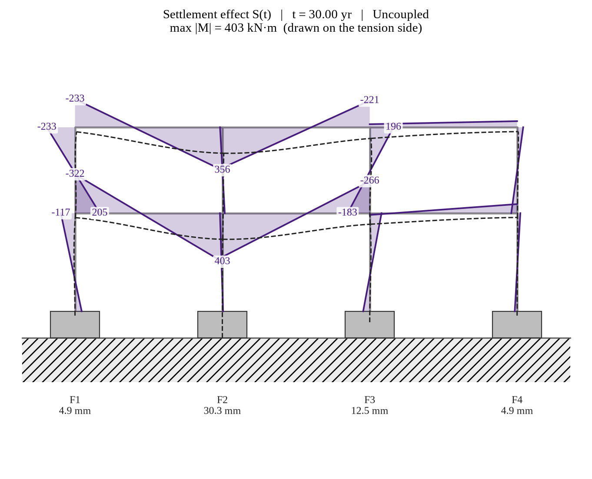
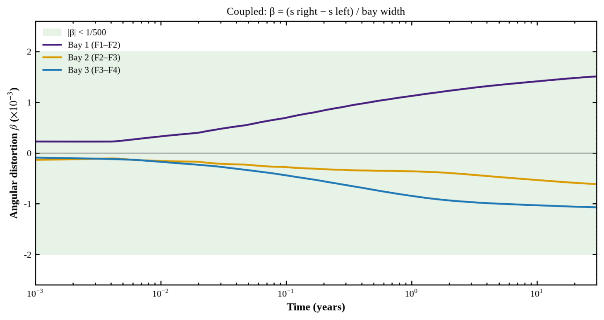
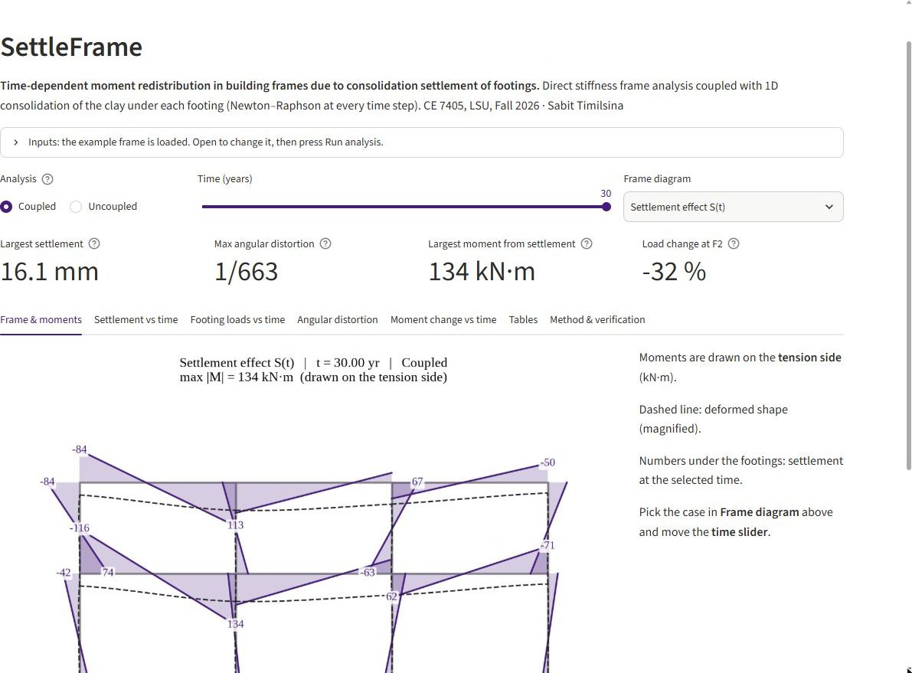

Moment redistribution in building frames due to consolidation settlement of footings
When we analyze an indeterminate frame in class, we usually assume the supports do not move. Footings on saturated clay keep settling for years after construction, and they rarely settle by the same amount. Because the frame is indeterminate, this uneven settlement puts extra moments into the beams and columns, and those moments keep changing as the clay consolidates. For this project I developed SettleFrame, a Python program that follows these moments over the life of a building.


The frame is analyzed with the direct stiffness method. Dead load, live load and the effect of settlement are separate load cases, so they can be combined at any time. For the clay under each footing, the stress increase comes from the 2:1 method, the settlement from the e–log σ′ relation with Cc, Cr, e0 and the overconsolidation ratio, and the rate from Terzaghi's one-dimensional consolidation equation, which I solve with finite differences in time.
The frame and the soil are coupled. A footing that settles more than its neighbors sheds part of its load to them through the frame, and that slows its own settlement. I built a matrix of how the footing reactions change for a unit settlement of each footing, and at every time step I solve the settlements and footing loads together with Newton–Raphson iteration. Setting this matrix to zero gives the usual uncoupled analysis, where the footing loads never change.


In the example, a three-bay, two-story RC frame, the footings on thin clay finish settling in about two years, while F2 keeps settling for decades. In the coupled analysis F2 loses about a third of its load, from 344 to 233 kN, and settles 16 mm after 30 years. The largest moment from settlement is 134 kN·m and the largest angular distortion is 1/663, which is within the 1/500 limit. If the footing loads are held constant instead, F2 settles 30 mm, the moment reaches 403 kN·m and the distortion is 1/237. For comparison, the largest dead-load moment in this frame is about 100 kN·m.


I checked the program against 29 hand calculations and closed-form solutions, including fixed-end and two-span beams with a settling support, a portal frame, and Terzaghi's consolidation curve, which the program follows within 0.24%. I also built the same frame in OpenSees and applied the 30-year settlements. The reactions and member-end moments matched at all 32 values I compared.
The program has a desktop version and a web version. In the web version, anyone can change the frame, the footings and the clay, run the analysis, and move a time slider to see the moments at any time. I used it for a live demo in my class presentation.
The model is 2D with gravity loads only, and the frame is linear elastic, so cracking and creep of the concrete, which would reduce these moments, are not included. Each footing sits on a single clay layer, and the footings do not affect each other's stresses.
Additional figures







